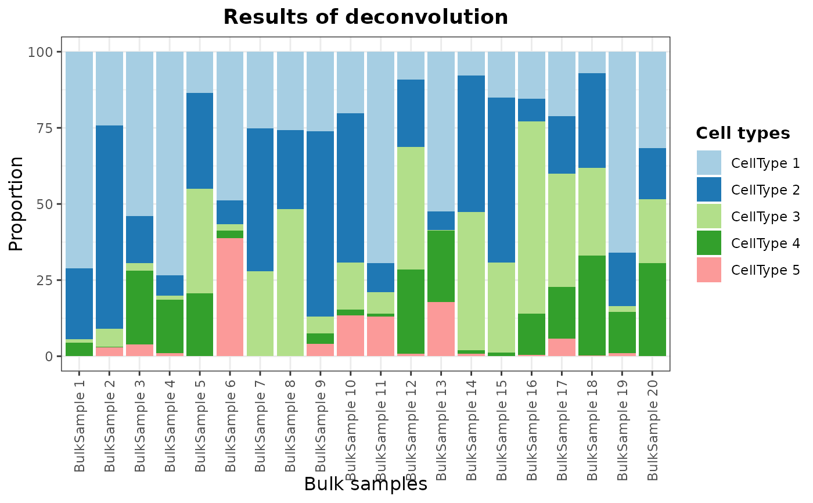
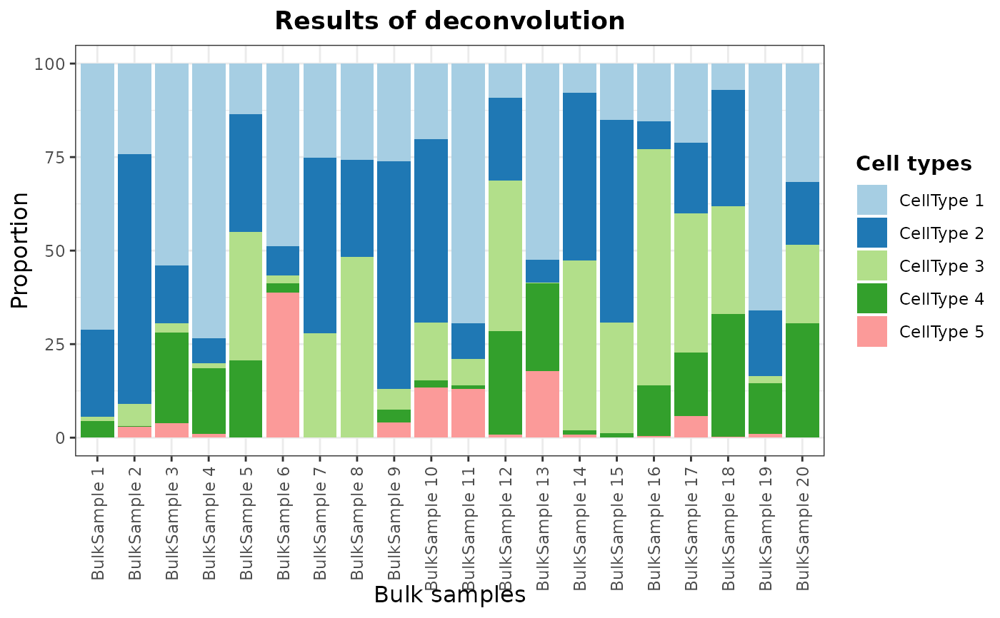

Bar plot of deconvoluted cell type proportions in bulk RNA-Seq samples
Source:R/AllGenerics.R
barPlotCellTypes.RdBar plot of deconvoluted cell type proportions in bulk RNA-Seq samples.
barPlotCellTypes(
data,
colors = NULL,
simplify = NULL,
color.line = NA,
x.label = "Bulk samples",
rm.x.text = FALSE,
title = "Results of deconvolution",
legend.title = "Cell types",
angle = 90,
theme = NULL,
...
)
# S4 method for DigitalDLSorter
barPlotCellTypes(
data,
colors = NULL,
simplify = NULL,
color.line = NA,
x.label = "Bulk samples",
rm.x.text = FALSE,
title = "Results of deconvolution",
legend.title = "Cell types",
angle = 90,
theme = NULL,
name.data = NULL
)
# S4 method for ANY
barPlotCellTypes(
data,
colors,
color.line = NA,
x.label = "Bulk samples",
rm.x.text = FALSE,
title = "Results of deconvolution",
legend.title = "Cell types",
angle = 90,
theme = NULL
)Arguments
| data |
|
|---|---|
| colors | Vector of colors to be used. |
| simplify | Type of simplification performed during deconvolution. Can be
|
| color.line | Color of the border bars. |
| x.label | Label of x-axis. |
| rm.x.text | Logical value indicating whether to remove x-axis ticks (name of samples). |
| title | Title of the plot. |
| legend.title | Title of the legend plot. |
| angle | Angle of text ticks. |
| theme | ggplot2 theme. |
| ... | Other arguments for specific methods. |
| name.data | If a |
Value
A ggplot object with the provided cell proportions represented as a bar plot.
Examples
# matrix of simulated proportions (same estructure as deconvolution results)
deconvResults <- gtools::rdirichlet(n = 20, alpha = c(1, 1, 1, 0.5, 0.1))
colnames(deconvResults) <- paste("CellType", seq(ncol(deconvResults)))
rownames(deconvResults) <- paste("BulkSample", seq(nrow(deconvResults)))
barPlotCellTypes(deconvResults)
 # Using a DigitalDLSorter object
DDLS <- DigitalDLSorter(deconv.results = list(Example = deconvResults))
barPlotCellTypes(DDLS)
#> 'name.data' not provided. By default, first results are used

# Using a DigitalDLSorter object
DDLS <- DigitalDLSorter(deconv.results = list(Example = deconvResults))
barPlotCellTypes(DDLS)
#> 'name.data' not provided. By default, first results are used
